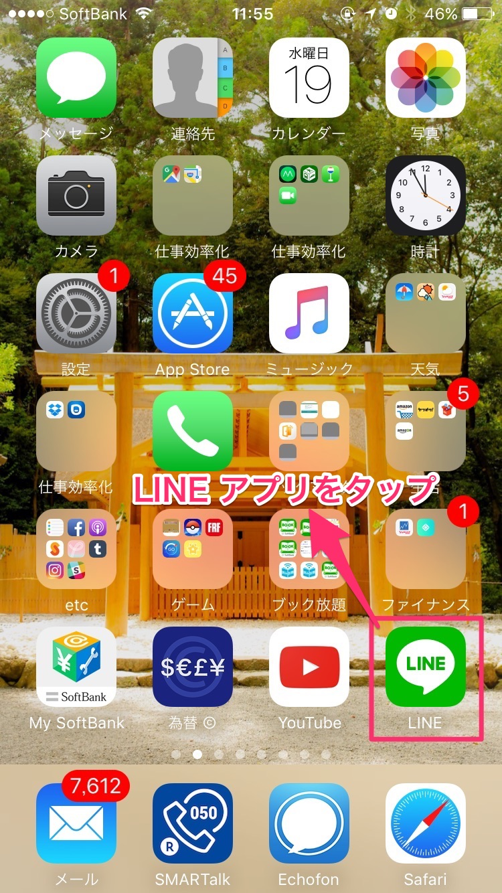
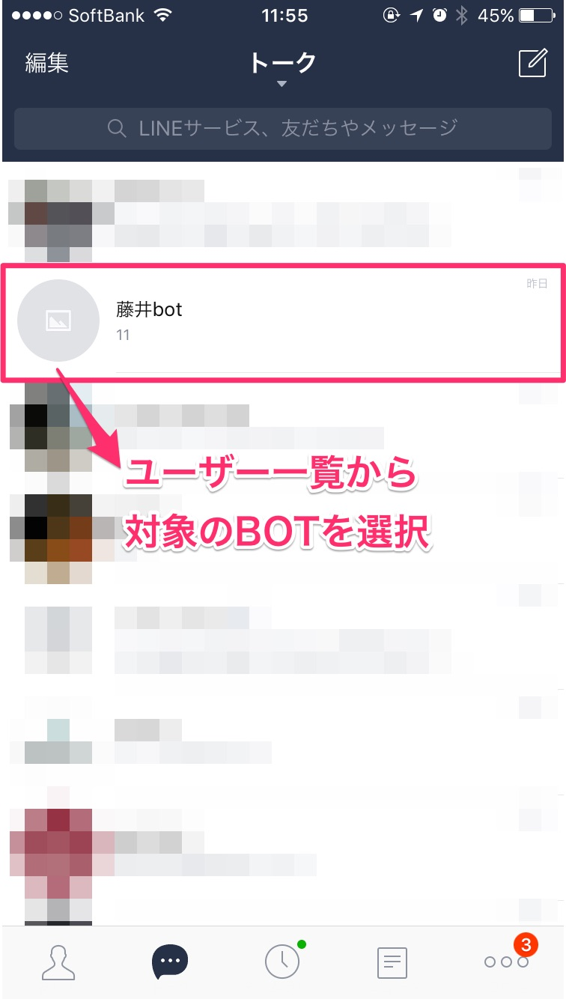
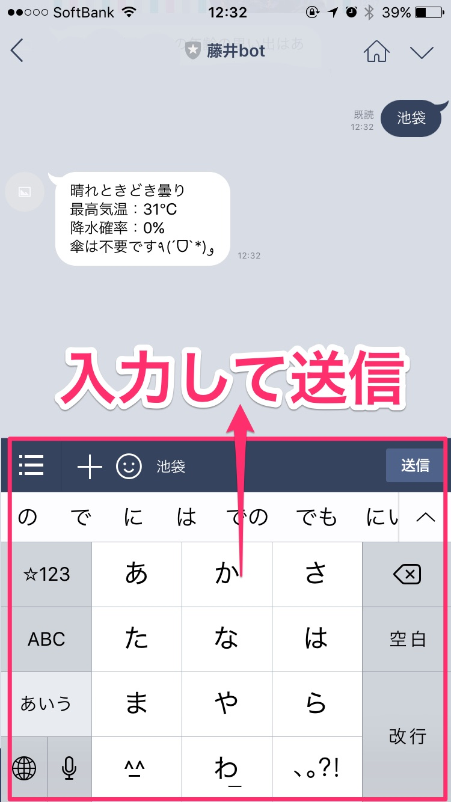

LINEで数字を送ると、
その数字に該当する年齢の思い出話が返ってくるBOT
(ﾟｰﾟ*)｡oO（あいつまた訳わかんねぇくだらないもの作ってんな）
そんな事を思った皆様！
ちょっと俺の話を聞いてくれ！！！
2016/04/08
LINE社がBOT API利用を先着1万名に無償提供のニュース
各種IT系ニュースサイトやSNSでも話題になり
即日様々なBOTが生まれました
など
私は思いました
それBOTでやる必要ある？
専用アプリや専用WEBサービスがある上で、
わざわざLINE BOTで行う有効性とは
LINE BOTで天気を調べる手順



ゴールまでの手順が長すぎる
天気予報アプリの方が当然使いやすい
果たして個人で作るLINE BOTで
専用アプリ、サービスより優位性を持つアイディアは何か
考える
（´-`）.｡oO（・・・・・・・・・）
思いつかない!!!!!!!!
LINE BOTである必要性、優位性があるものが思いつかない!!!!!!
ならば！
瞬間的に何度も利用してくれるアイデアは何か
それでいて人の役に立つものか何か
idobataにレプラの独身男性が集うサロンがあると小耳に挟む
合コンも終わりに近づき連絡先交換タイムで意を決して
「LINE交換しましょう」
「私、LINEやってないんで」
「私、スマホ持ってないんで」
「お母さんに知らない人と交換しちゃダメって言われてるんで」
なんて言われて交換できずに言われてきたと思います
私もその一人です
どうしたらLINE交換できるか
興味を持たれていないが故に断られているので
興味を持ってもらう必要がある
「LINE交換しましょう」
↓
「LINE BOT作ったんですよ」
これの方が興味を持ってくれるんじゃないでしょうか！？
レプラボへの公開に先立ち友人に
当BOTプログラムを提供したところ
大成功したようでした
(•̀ᴗ•́)و ̑̑♡
普段全然喋らないのにネットだとすげぇ喋るんだなｗｗｗ
見つめ合うとお話しできない
思いの全てをINSERT文に託して
DBに流し込んでください
以上です(｀_´)ゞ
スペースキーまたは矢印キーでスライドします